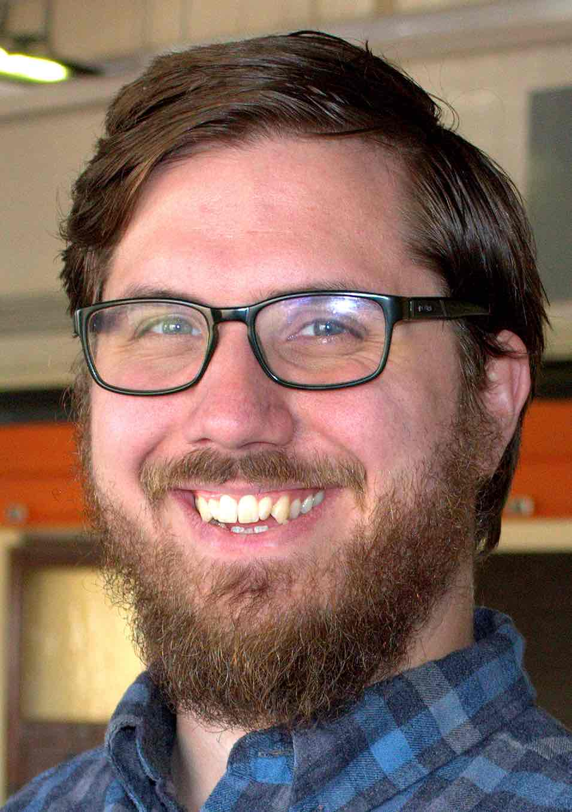

ResumeCVGitHub ProfileLast Updated Feb 2023
|
About MeI am a 6th year Artificial Intelligence PhD student at Oregon State University. I am currently seeking a full time position as a Machine Learning Researcher/Engineer starting April 2023. My interests are in Computer Vision, Scientific Machine Learning, Natural Language Processing, and Robotics. Selected PublicationsMatthew L. Olson, Shusen Liu, Rushil Anirudh, Jayaraman J. Thiagarajan, Peer-timo Bremer, Weng-Keen Wong,. Cross-GAN Auditing: Unsupervised Identification of Attribute Level Similarities and Differences between Pretrained Generative Models. (UNDER REVIEW) CVPR 2023. preprint [code (to appear)] Matthew L. Olson. Deep Generative Multimedia Children's Literature. AAAI 2023 Workshop on Creative AI Across Modalities. Arxiv [code] Tobias Huber, Maximilian Demmler, Silvan Mertes, Matthew L. Olson and Elisabeth André. GANterfactual-RL: Understanding Reinforcement Learning Agents' Strategies through Visual Counterfactual Explanations. The Conference on Autonomous Agents and Multiagent Systems (AAMAS), 2023. pdf (to appear) Jonathan Dodge, Andrew Anderson, Matthew L. Olson, Rupika Dikkala, and Margaret Burnett. How Do People Rank Multiple Mutant Agents? ACM Conference on Intelligent User Interfaces (IUI), 2022. pdf Matthew L. Olson, Thuy-Vy Nguyen, Gaurav Dixit, Neale Ratzlaff, Weng-Keen Wong, Minsuk Kahng. Contrastive Identification of Covariate Shift in Image Data. IEEE Visualization Conference (VIS), 2021. pdf arxiv [code] video (8 min) Matthew L. Olson, Roli Khanna, Lawrence Neal, Fuxin Li, Weng-Keen Wong. Counterfactual State Explanations for Reinforcement Learning Agents via Generative Deep Learning. Artificial Intelligence (AI), 2021. arxiv [code] Andrew Anderson, Jonathan Dodge, Amrita Sadarangani, Zoe Juozapaitis, Evan New-man, Jed Irvine, Souti Chattopadhyay, Matthew L. Olson, Alan Fern, and Margaret Burnett. Mental models of mere mortals with explanations of reinforcement learning. Transactions on Interactive Intelligent Systems, 2020. pdf Lawrence Neal, Matthew L. Olson, Weng-Keen Wong, Xiaoli Fern, Fuxin Li. Open Set Learning with Counterfactual Images. Proceedings of the European Conference on Computer Vision (ECCV). 2018. pdf Additional PublicationsMatthew L. Olson, Shusen Liu, Rushil Anirudh, Jayaraman J. Thiagarajan, Weng-Keen Wong, Peer-timo Bremer. Unsupervised Attribute Alignment for Characterizing Distribution Shift. NeurIPS 2021 Workshop on Distribution Shifts. pdf Matthew L. Olson, Neale Ratzlaff, Weng-Keen Wong. Generalizing Cross Entropy Loss with a Beta Proper Composite Loss: An Improved Loss Function for Open Set Recognition. OpenReview, 2021. pdf [code] Prachi Rahurkar, Matthew L. Olson, Prasad Tadepalli. Human Adversarial QA: Did the Model Understand the Paragraph? NeurIPS 2020 Workshop on Human And Model in the Loop Evaluation and Training Strategies. pdf Matthew L. Olson, Lisa Zhang, Chun-Nam Yu. Adapting pretrained language models for long document classification. OpenReview, 2019. pdf Matthew L. Olson, Lawrence Neal, Fuxin Li, Weng-Keen Wong. Counterfactual States for Atari Agents via Generative Deep Learning. International Joint Conference on Artificial Intelligence workshop on Explainable AI. Macao, China, August 2019. pdf Arpit Christi, Matthew L. Olson, Mohammad Amin Alipour, and Alex Groce. Reduce Before You Localize: Delta-Debugging and Spectrum-Based Fault Localization IEEE International Workshop on Debugging and Repair. Memphis, Tennessee, October 2018. pdf |